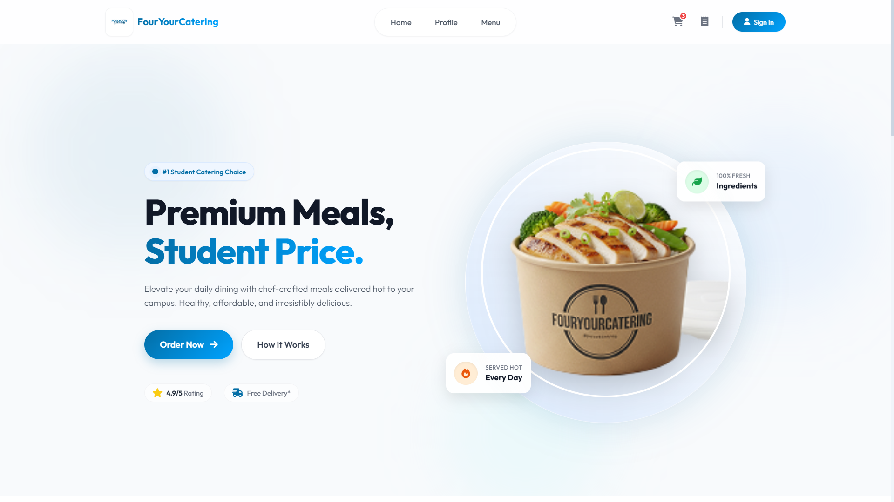
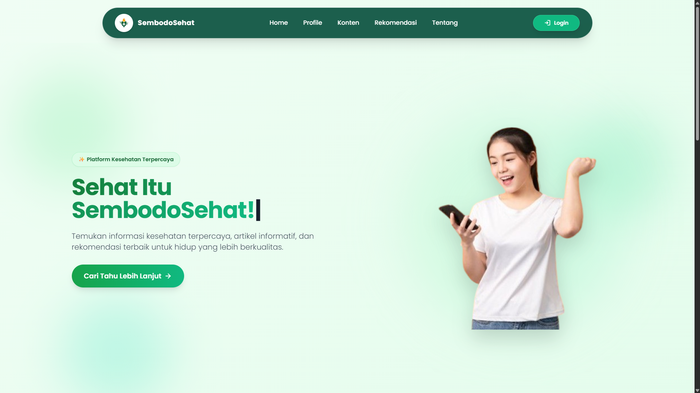
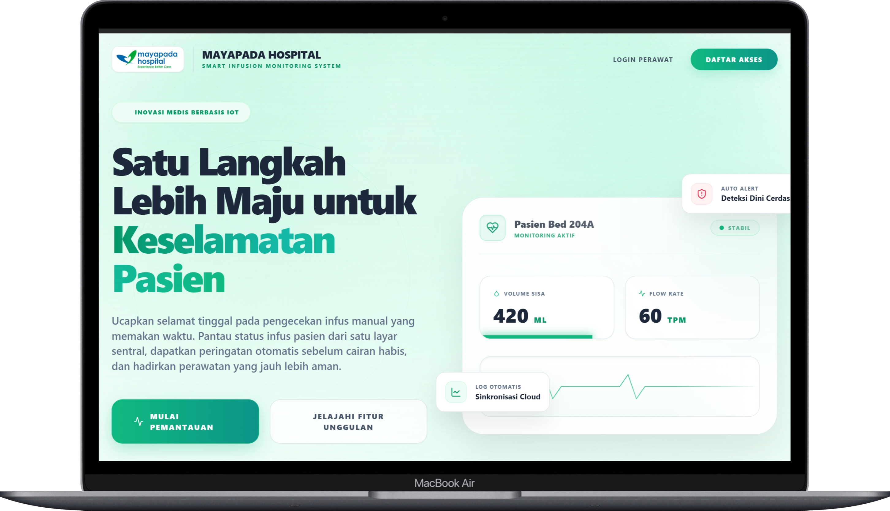

Kredensial & Dokumen Credentials & Files

Produksi Film
Dhermaganing Ati • 2025

Presidium KM FV
Kongres Mahasiswa FV • 2025

Kader HMI
Himpunan Mahasiswa Islam • 2024
Mahasiswa Teknologi Informasi di Universitas Brawijaya dengan minat besar di bidang pengembangan web dan solusi digital berbasis teknologi. Berpengalaman membangun antarmuka web interaktif dan responsif menggunakan Laravel, HTML, CSS, dan JavaScript.
An Information Technology student at Brawijaya University with a great interest in web development and technology-based digital solutions. Experienced in building interactive and responsive web interfaces using Laravel, HTML, CSS, and JavaScript.
D3 Teknologi Informasi D3 Information Technology
Saya adalah mahasiswa dengan minat besar di bidang Teknologi Informasi, khususnya dalam mengembangkan aplikasi web dan mengimplementasikan solusi digital berbasis teknologi. Saya memiliki pengalaman membangun antarmuka web interaktif dan responsif menggunakan Laravel, HTML, CSS, dan JavaScript. Selain itu, saya juga mengembangkan sistem otomasi berbasis Arduino yang terintegrasi dengan platform web.
I am a student with a great interest in Information Technology, especially in developing web applications and implementing technology-based digital solutions. I have experience in building interactive and responsive web interfaces using Laravel, HTML, CSS, and JavaScript. Apart from that, I have also developed a simple Arduino-based automation system integrated with a web platform.
Pendidikan saya di Program D3 Teknologi Informasi Universitas Brawijaya (IPK: 3.75) memperkuat kemampuan saya dalam pemrograman, manajemen database, dan desain UI/UX. Saya aktif berorganisasi di berbagai kegiatan kampus dan memiliki pengalaman kepemimpinan yang kuat.
My education in the D3 Information Technology program at Brawijaya University (GPA: 3.75) strengthens my skills in programming, database management, and UI/UX design. I am actively involved in various campus organizations and have strong leadership experience.
Lihat Riwayat Kerja → View Work History →D3 Teknologi Informasi | IPK: 3.75
D3 Information Technology | GPA: 3.75
Fokus: Pemrograman Web, Manajemen Database, Desain UI/UX.
Focus: Web Programming, Database Management, UI/UX Design.
Ilmu Pengetahuan Sosial (IPS)
Social Sciences
Lulusan SMA dengan dasar kuat dalam ilmu sosial dan kemampuan analitis.
High school graduate with a strong foundation in social sciences and analytical skills.
Film "Dhermaganing Ati" oleh Novian Ramadhani Zuhri (Magang)
Kongres Mahasiswa Fakultas Vokasi (KM FV)
Dewan Perwakilan Mahasiswa Fakultas Vokasi (DPM FV)
Badan Legislasi Fakultas Vokasi
Himpunan Mahasiswa Program Studi TI (HMPS TI)
Himpunan Mahasiswa Islam (HMI)
PKKMB Fakultas Vokasi (Pengenalan Kehidupan Kampus)

Platform pemesanan katering dengan manajemen menu, keranjang belanja, checkout, dan dashboard admin responsif.
Catering ordering platform with menu management, shopping cart, checkout, and responsive admin dashboard.

Platform kesehatan digital dengan artikel fitness, video workout, panduan nutrisi, dan dashboard admin.
Digital health platform with fitness articles, workout videos, nutrition guides, and admin dashboard.

Sistem monitoring infus pasien real-time dengan kalkulasi DPM otomatis, charting digital, dan REST API.
Real-time patient infusion monitoring with automatic DPM calculations, digital charting, and REST API.
Sistem monitoring smart room IoT dengan sensor real-time, rule engine otomatis, dan dashboard responsif.
IoT smart room monitoring with real-time sensors, automated rule engine, and responsive dashboard.
Aplikasi produktivitas mobile dengan timer Pomodoro, pelacakan subtask, dan database lokal.
Mobile productivity app with Pomodoro timer, subtask tracking, and local database.
Dhermaganing Ati • 2025
Kongres Mahasiswa FV • 2025
Himpunan Mahasiswa Islam • 2024
Silakan hubungi saya melalui salah satu kontak di bawah ini. Saya terbuka untuk peluang magang, kerja penuh waktu, atau kolaborasi proyek pengembangan web dan teknologi. Feel free to reach out via any of the channels below. I am open to internship opportunities, full-time positions, or collaboration on web development and technology projects.